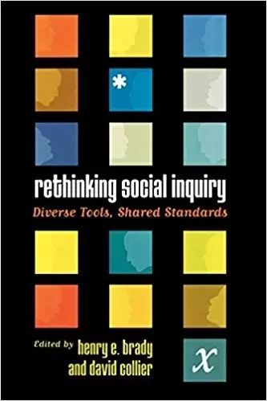

拉美政治、历史关节点与方法论研究：大卫·科利尔的学术人生
原创 政观编辑部
政文观止Poliview
微信号 zhengwenguanzhi
功能介绍 从一群年轻人的视角出发，专业、专注、专解海内外比较政治经济研究的前沿佳作。
__发表于
#学人小传 10 个
#比较政治学 121 个
（科利尔是一位中国政治学界比较陌生的著名学者，不仅可能源于拉丁美洲以及方法论研究在国内比较“小众”，同样或许是他的几本著作相对而言都实在是太厚了。）
大卫·科利尔（David Collier），1942年出生于美国芝加哥，本科就读于哈佛大学，1971年博士毕业于芝加哥大学政治学系，现为加州大学伯克利分校政治学教授，美国艺术与科学学院（American Academy of Arts and Sciences）院士，曾担任美国政治学会比较政治学分会主席、定性研究分会主席（首任）以及学会副主席，2014年获得具有“政治学诺贝尔奖”之称的约翰·斯凯特政治科学奖（Johan Skytte Prize in Political Science）。
曾经醉心文学与写作的科利尔主修英语专业，但不久即转入了政府系。对科利尔而言，李普塞特的《政治人》一书为他打开了政治学研究的大门，李普塞特的研究，问题意识清晰、研究视野宏大，诸多假设与案例在比较中熠熠生辉，这对本科时代的科利尔产生了巨大的震撼，同时为其之后对政治学方法论的执着奠定了基础。而亨廷顿开设的“政治发展”课程以及《变化社会中的政治秩序》同样让他痴迷，尽管亨廷顿并非发展中国家的研究专家，但其对世界发展大势的深刻洞见为科利尔留下的深刻的印象。
本科毕业后，科利尔选择芝加哥大学继续博士的学习。在研究领域上，科利尔选择了拉丁美洲，而拉丁美洲与他也的确有着深厚的渊源。科利尔来自于人类学研究的世家，他的祖父、父亲、两个叔叔以及几个兄弟均从事拉丁美洲研究。此时的芝加哥大学政治学系并没有拉美研究专家，但勤勉的科利尔通过求教于历史系的教授来努力扩展自身的知识储备。没过多久多久，菲利普·施密特（Philippe Schmitter）加盟芝加哥大学，从而为科利尔的研究打开了新的视野，两人日后也成为了很好的伙伴。在博士论文的选题上，科利尔最初希望研究秘鲁的议会制度，然而秘鲁军政府的建立打破了他的构想并迫使他不得不改变选题。随后，科利尔将研究的视角转移到秘鲁威权政治兴起的历史与现实，通过在秘鲁首都利马的实地分析形成了新博士论文，并于1976年出版第一部著作 Squattersand oligarchs : authoritarian rule and policy change in Peru 。
1979年，科利尔加盟加州大学伯克利分校。此时，美国学者在现代化理论以及政治发展研究的浪潮下逐渐加强了对第三世界的关注，其中，由于拉丁美洲的特殊位置其重视程度则尤为明显。此时的拉丁美洲，往昔的发展辉煌已经逐渐远去，取而代之的是政治动荡下军政府的上台以及威权主义的兴起。在相关研究中，奥唐奈（Guillermo O’Donnell）的《现代化和官僚威权主义：南美政治研究》具有里程碑式的意义。奥唐奈的理论预测了智利、危地马拉官僚威权政体的出现以及这一政体在阿根廷的再现，之后学者纷纷对他的理论进行验证。1979年科利尔主编的《拉丁美洲的新独裁主义》（ The New Authoritarianism in Latin America ）出版，该书第一章即对奥唐奈的理论进行总结。当现代化研究的学者试图通过提出普遍理论来理解世界时，科利尔的“新独裁主义”研究表明，第三世界的区域研究可能是更新与发展新理论的重要场所。事实也正是如此，诸如“依附论”、“发展型国家”等概念的提出，正是对区域性经验的理论化总结。这也从另一个侧面表明，作为地区经验理论结果，许多西方流行观念并不具有超越时空的指导意义，几乎所有试图上升为“一般理论”的比较政治常识，其最终往往都不会得到任何实质意义。
在《拉丁美洲的新独裁主义》一书的结尾，科利尔认为独裁政权的崛起应该放置到更长时间的政治变革周期中加以分析。1991年，奠定科利尔学术地位的著作《型塑政治场域》横空出世（并于2002年再版）。在这部近就九百页的著作中，作者探寻了不同拉丁美洲不同政治制度的起源。在作者成书的年代，摩尔的《专制与民主的社会起源》已经产生了广泛的影响，《国家与社会革命》引发的争论以及《拉美的依附性及发展》在英语世界的出版，激发着科利尔通过比较历史分析的方法去研究拉美世界更宏大的议题，而《型塑政治场域》也的确做到了，在一定程度上它是目前为止在比较历史视野下对拉美政治最系统且最具雄心的研究。这部著作是科利尔与其夫人露丝·贝林斯·科利尔（Ruth Berins Collier）共同完成的。科利尔夫人同样是著名的政治学学者，研究领域涉及比较政治、拉美研究、民主化以及劳工政治等。在《型塑政治场域》的写作过程中二人分工明确：科利尔负责阿根廷、哥伦比亚、秘鲁与乌拉圭，他的夫人负责巴西、智利、墨西哥与委内瑞拉。这对学术伉俪合写过多篇论文以及共同指导了许多有志于研究比较政治的莘莘学子。
回到本书，作者认为，二十世纪头几十年发生的劳工吸纳的不同方式对二战后拉丁美洲的政体性质有着深远的影响。例如，巴西的劳工吸纳是由国家主导进行并于二十世纪三四十年代完成的，这导致了战后巴西的极化政治倾向以及政策推行困难，进而引发了1964年民主政体的崩溃以及军政府掌权；相反在委内瑞拉，劳工吸纳是通过政党完成，其结果是在五十年代委内瑞拉形成了由两大主导政党构成的相对和平的选举制度。立足八个拉美国家劳工吸纳的方式，作者认为此关键时刻上寡头所拥有的政治力量至关重要。具体来说，劳工吸纳时期动员强度与寡头政治力量成反比。在作者研究的八个案例中六个存在明显的反比关系：在巴西和智利，寡头力量强大，因此采取了对劳工控制的国家吸纳模式；在墨西哥与委内瑞拉，寡头力量的弱小导致规模的大规模劳工动员得以发生；在乌拉圭与哥伦比亚的情况介于两种模式之间）但是秘鲁与阿根廷寡头力量在许多领域相当强大，但在改革时期劳工动员体现了很高的水平，然而作者说明，两国的寡头力量具有重大“缺陷”，以及经过了“失败的吸纳时期”（Aborted Incop. Period）——这种考量使得总体负相关关系在这二者依旧适用。
《型塑政治场域》同样标志着一项重要的分析工具——“历史关节点”（critical juncture）的出现。正如作者试图表明的，拉丁美洲八国战后政体差异的原因可以追溯到它们在各自时期对劳工进行吸纳的方式与程度，而这一时期即构成了政治发展的“历史关节点”。根据最新定义，历史关节点可以看做“核心行为人对结果影响的可能性发生实质性的提升的一个较短时间段”（Capoccia and Daniel Kelemen 2007）。此分析工具不仅解释了长时段政治变迁的原因与机制，同样是政治学/社会学研究者对传统经济史研究中“路径依赖”（path dependence）这一概念的完善与超越。科利尔夫妇在方法论上的贡献启发了其他比较政治研究者对这一议题的关注，尤其是随着路径依赖理论被保罗·皮尔逊（Pierson 2000）与詹姆斯·马洪尼（Mahoney2000）分别引入政治科学与历史社会学的研究视野，历史关节点与路径依赖已经成为了比较历史分析的核心特征之一。随着近来其他青年学者的努力（Hogan 2006，Slater and Simmons 2010，Soifer 2012等），历史关节点的相关知识得到了进一步的补充与发展，“历史关节点研究的挑战”同样是刚刚结束的2017的美国政治学年会的一个分论坛的主题。
在完成《型塑政治场域》之后，科利尔将更多的时间放在了方法论的研究上。其中，对“概念”的探索是其关注的重点领域之一。概念研究是比较政治分析的起点，作为概念研究中“萨托利传统”（Satori 1970，国内对萨托利的关注主要聚焦于他的政党研究与民主理论，但对其之余概念研究的重大贡献却知之甚少）的拓展与反思，科利尔做出了许多富有原创性的积极成果，展现了研究者对概念廓清如何能实现知识的积累与创造。与此同时，科利尔拓展了类型学的研究，发展出更加复杂与完整的理论体系。例如在民主的概念上，科利尔对民主概念的“二分法”与“分级法”进行了折中调和，认为而二者的使用必须视具体情况而定。2014年的约翰·斯凯特政治科学奖正是其在对政治学概念研究领域的发展以及定性方法论上的贡献。
20世纪90年代之后，科利尔主持编辑了《数学模型与因果推论》（S _tatistical Models and Causal Inference: A
Dialogue with the Social Sciences_ ）以及《牛津政治学方法论手册》（ The Oxford Handbook of Political Methodology ）等方法论著作，其中最为著名的当属《重思研究设计》（ Rethinking Social Inquiry : Diverse Tools, Shared Standards）。
作为定性研究第一波方法论研究高潮到来的其标志，《社会科学中的研究设计》（ Designing Social Inquiry ：
Scientific Inference in Qualitative Research ，简称KKV, 1994）的出版具有十分重大的意义，它所开启的“两种传承”的方法论之争一直持续到今天。如该书的副标题所描述，KKV 1994以社会科学重大定性研究为起点，作者认为“定量与定性的区别至多在于特定的技术，但二者在分析问题上的逻辑却没有任何不同”。然而，KKV对于定性研究的看法是极其“简单粗暴”的——定性研究只有遵循定量的逻辑才能实现科学。针对这种观点，科利尔等人提出了一种更加多元的路径，同时重申了定性研究的优势所在。科利尔强调，定性研究同样可以获得确信的因果推论，在这一点上它们完全不差于定量的传统。其中一个重要的方式就是对“因果过程观察”（causal process observation）的关注，也就是过程追踪（process tracing）的研究方法。该方法不仅可以进行理论创建（theory building），同样可以实现理论检验（theory testing），通过因果机制（causal mechanism）的识别以达成研究者的目的。

但相较于篇幅均为二百多页的《社会科学中的研究设计》以及《两种传承》，《重思研究设计》的页数几乎是两书的总和——因此或许同《型塑政治场域》的命运类似，这本重要的著作在短时间内是不会被翻译成中文了。（在此笔者忽然想到了一位历史专业出身却对定量研究情有独钟的同学，他在读完 Rethinking Social Inquiry 之后对兴致冲冲提出了翻译此书的构想，如今，他已赴哈佛大学东亚研究中心继续深造。）
科利尔不仅自身学术造诣深厚，同时是一个积极推进共同体建设的学者——在这方面他似乎比斯考切波要温和一些。随着定性研究的复兴，科利尔等人意识到美国政治学会有必要建立相关领域的分会了，于是在同Andrew Bennett、Colin Elman、John Gerring等学者的共同努力下，美国政治学学会成立定性方法分会，科利尔成为首任负责人。该分会于2008年更名为定性与多元方法分会，如今已经同比较政治分会、政治学方法分会并列为美国政治学会中规模最大的三个组织。为表彰其在政治学的突出贡献，科利尔于2014年获得美国政治学会颁发的弗兰克·J. 古德诺奖（Frank J. Goodnow Award）。
作为大学教授，科利尔在加州大学伯克利分校已经度过了近四十年的时光，担任过政治学系主任以及拉美研究中心主任等职，培养了Barbara Geddes、Deborah Yashar、James Mahoney、Steven Levitsky、Thad Dunning等诸多优秀的弟子，并使该校政治学系成为比较政治以及拉美研究的重镇。
但很遗憾的是，在科利尔诸多著作中目前为止尚未有一本在大陆出版（港澳台情况笔者未考究），但作为政治学研究者，我们很必要关注科利尔，在他的学术人生中发现某些优秀品格：一名杰出的比较政治研究者，不仅要对特定的区域或议题具有深刻的了解，同时要在方法论层面具有反思与创新；一名杰出教育从业者与导师，不仅自身要拥有渊博的学识与勤勉、谦逊的性格，同样需要培养出一批具有学术激情与科研能力的弟子，为学科的薪火相传做出应有贡献。
** **
科利尔的的代表作与论文
-
The New Authoritarianism in Latin American, editor and co-author (Princeton University Press, 1979).
-
Shaping the Political Arena: Critical Junctures, the Labor Movement,and Regime Dynamics in Latin America , co-authored with Ruth Berins Collier（University of Notre Dame Press, 2002）.
-
Concepts and Method in Social Science: The Tradition of Giovanni Sartori , edited with John Gerring (Routledge,2009).
-
Rethinking Social Inquiry: Diverse Tools, Shared Standards, （ second and expanded edition ）, co-authored and edited with Henry E. Brady (Rowman & Littlefield Publishers, 2010)
-
“Democracy with Adjectives,” with Steven Levitsky. World Politics 49, No. 3 (1997): 430-51.
-
“Measurement Validity: A Shared Standard for Qualitative and Quantitative Research,” with Robert Adcock. American Political Science Review 95, No. 3 (Sept. 2001): 529–46.
-
“Conceptual Stretching Revisited,” with James E.Mahon. American Political Science Review, 87, No. 4 (Dec.1993): 845-55.
-
“Understanding Process Tracing: Exercises and Examples.“2011. PS: Political Science and Politics 44, No. 4 (October):823-30.
文中提到的其他文献
-
西摩·马丁·李普塞特：《政治人：政治的社会基础》，上海人民出版社，2011年版
-
萨缪尔·P.亨廷顿：《变化社会中的政治秩序》，上海人民出版社，2008年版
-
吉列尔莫·奥唐奈 ：《现代化与官僚威权主义》，北京大学出版社，2008年版
-
巴林顿·摩尔：《专制与民主的社会起源》，上海译文出版社，2012年版
-
西达·斯考切波：《国家与社会革命》，上海人民出版社，2008年版
-
费尔南多·恩里克·卡多佐、恩佐·法勒托：《拉美的依附性及发展》，世界知识出版社，2002年版
-
保罗·皮尔逊：《时间中的政治》，江苏人民出版社，2014年版
-
加里·金、罗伯特·基欧汉、悉尼·维巴：《社会科学中的研究设计》，格致出版社，2014年版
-
加里·格尔茨、詹姆斯·马奥尼：《两种传承》，格致出版社，2016年版
-
Paul Pierson，“Increasing Returns, Path Dependence, and the Study of Politics.” American Political Science Review ，Vol. 94，No.2，2000，pp.251-267.
-
James Mahoney，“Path Dependence in Historical Sociology”， Theory and Society ，Vol.29，No.4，2000，pp.507-548
-
Giovanni Capoccia and R. Daniel Kelemen，“The Study of Critical Junctures：Theory”，Narrative and Counterfactuals in Historical Institutionalism， World Politics ，Vol.59，No.3，2007，pp.341-369
-
John Hogan，“Remoulding the Critical Junctures Approach”， Canadian Journal of Political Science ，Vol.39，No.3，2006，pp.657—679
-
Hillel David Soifer，“The Logic of Critical Junctures”， Comparative Political Studies ，Vol.45，No.12，2012，pp.1572-1579
-
Dan Slater and Erica Simmons，“Informative Regress: Critical Antecedents in Comparative Politics”， Comparative Political Studies ，Vol.43，No.43，2010，pp.886-917
政观编辑部
感谢您的支持
微信扫一扫赞赏作者 __赞赏
已喜欢，对作者说句悄悄话
取消 __
发送给作者
发送
最多40字，当前共字
上一页 1/3 下一页
长按二维码向我转账
感谢您的支持
受苹果公司新规定影响，微信 iOS 版的赞赏功能被关闭，可通过二维码转账支持公众号。
预览时标签不可点
个
上一篇 下一篇
微信扫一扫
关注该公众号
微信扫一扫
使用小程序
： ， 。 视频 小程序 赞 ，轻点两下取消赞 在看 ，轻点两下取消在看